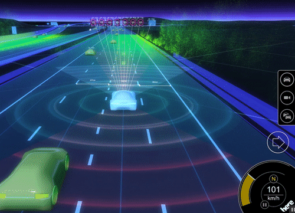
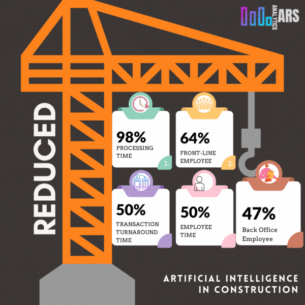

Изкуственият интелект (AI) играе важна роля в инженерството – той оптимизира процеси, открива грешки и подпомага вземането на решения. Ето три реални приложения на AI в инженерния свят:
🚗 Автомобилна индустрия
AI се използва за автономно шофиране – системи разпознават пътни обекти и вземат решения в реално време.
🏗️ Строителство
AI анализира структурни данни, открива дефекти в сгради и помага при планиране на безопасността.
🤖 Роботика
AI захранва роботи, които изпълняват задачи като монтаж, инспекция и ремонт в индустриални среди.

AI вече е част от съвременното инженерство и ще продължи да променя бъдещето му.